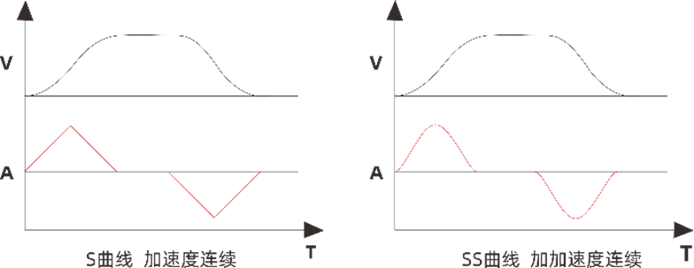
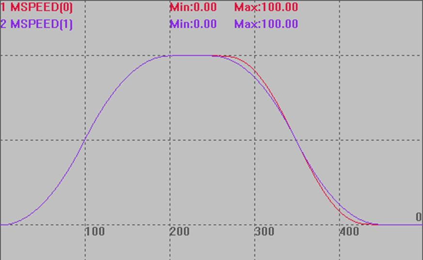
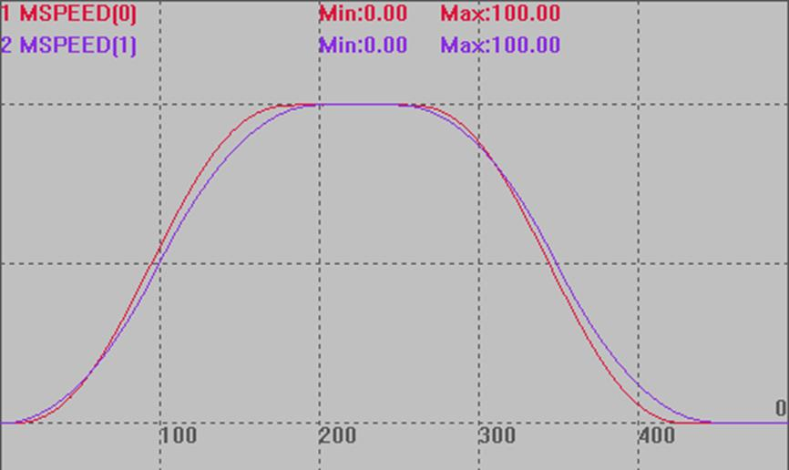
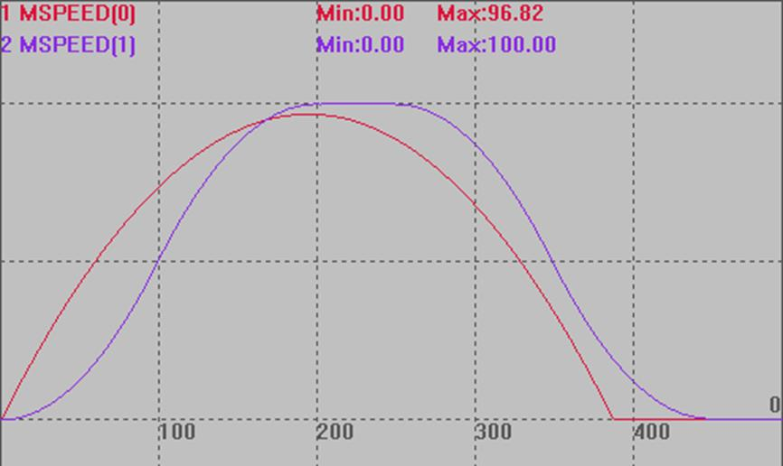

|
类型 |
轴参数 |
|
描述 |
0 - 缺省值，使用sramp来设置S曲线； 4 - 起步时最大加速度, 达到最高速时加速度渐变为0； 6 - 新增类型SS曲线，加加速度连续的曲线类型，SS模式比T形减速会增加87%的减速时间。此模式加速时使用0模式，减速时才生效，方便连续小线段插补； 7 - 新增类型SS曲线，加加速度连续的曲线类型。动态修改轴参数或连续插补可能导致加加速度无法连续，此时会切换到0模式，因此建议SRAMP也设置合适值。 VP_MODE与SRAMP都能平滑速度参数，区别参见下图：  |
|
语法 |
VAR1 = VP_MODE或 VP_MODE(axis)=mode mode：模式选择 |
|
适用控制器 |
通用 |
|
例子 |
例一 模式6 BASE(0,1) '选择轴0，1 ATYPE=1,1 UNITS=100,100 DPOS=0,0 MPOS=0,0 SPEED=100,100 ACCEL=1000,1000 DECEL=1000,1000 SRAMP=100,100 VP_MODE=6,0 '轴0模式6，轴1模式0 TRIGGER MOVE(25) AXIS(0) MOVE(25) AXIS(1)
速度曲线：模式6对加速度阶段不做处理，只针对减速度阶段。 MSPEED(0)垂直刻度50 MSPEED(1)垂直刻度50 
例二 模式7 VP_MODE=7,0 '轴0模式7，轴1模式0 其他条件按例一，速度曲线如下，模式7对加减速度阶段均做了处理。 
例三 模式4 VP_MODE=4,0 '轴0模式4，轴1模式0 其他条件按例一，速度曲线如下，起步时最大加速度, 达到最高速时加速度渐变为0。  |
|
相关指令 |